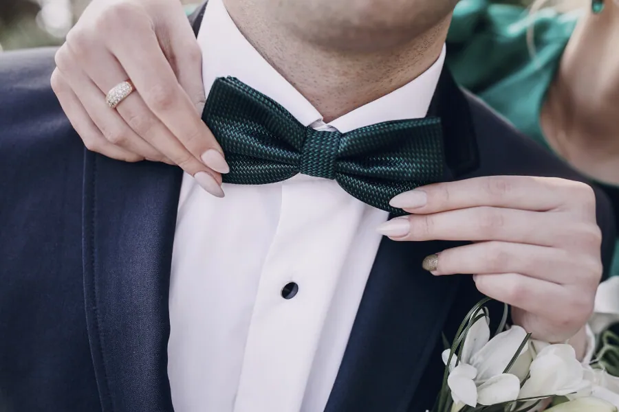
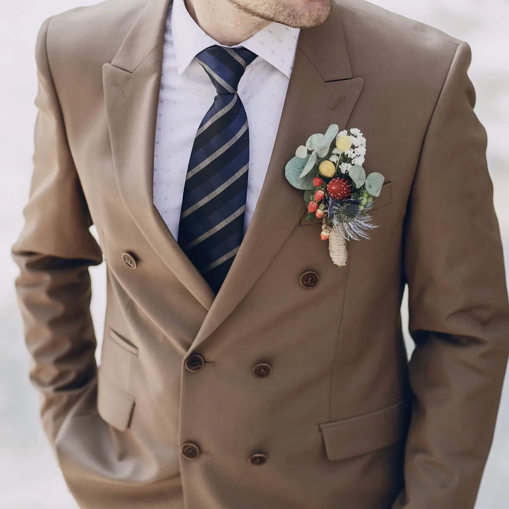
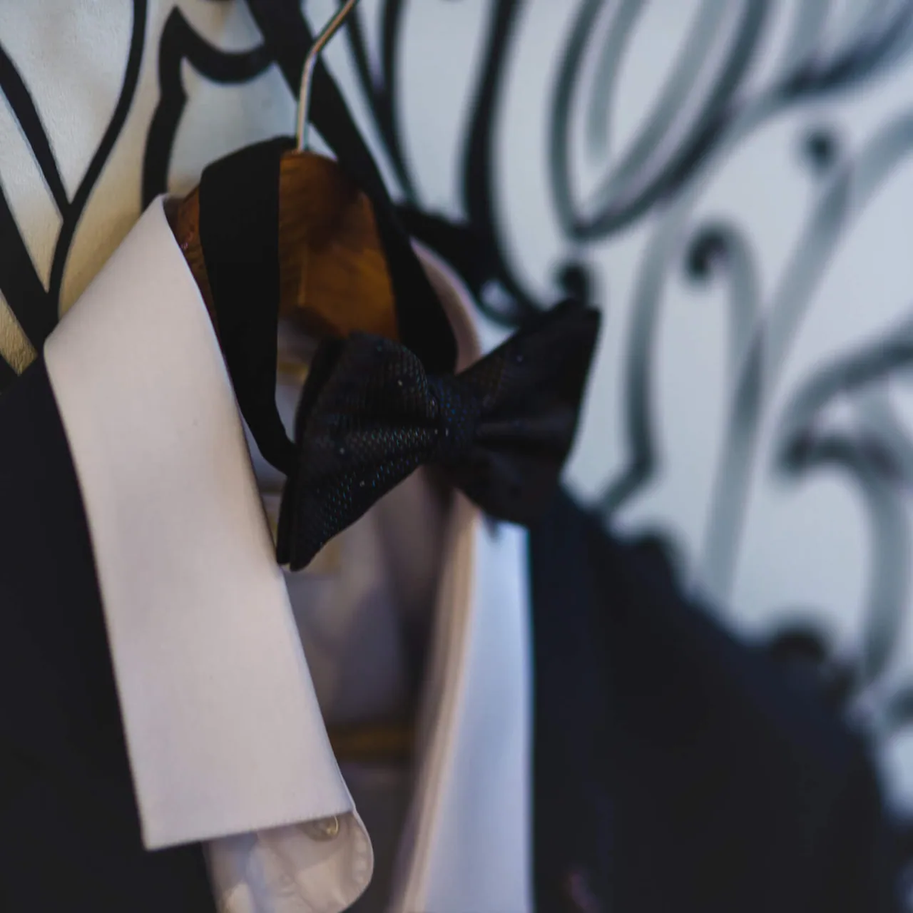
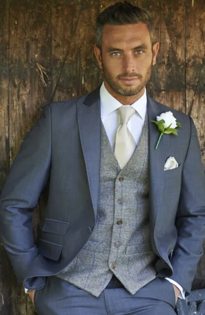
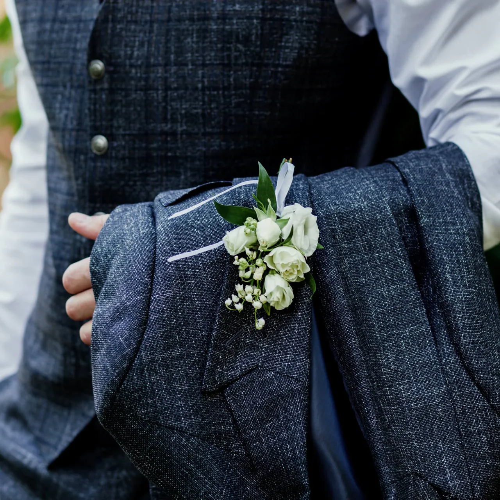
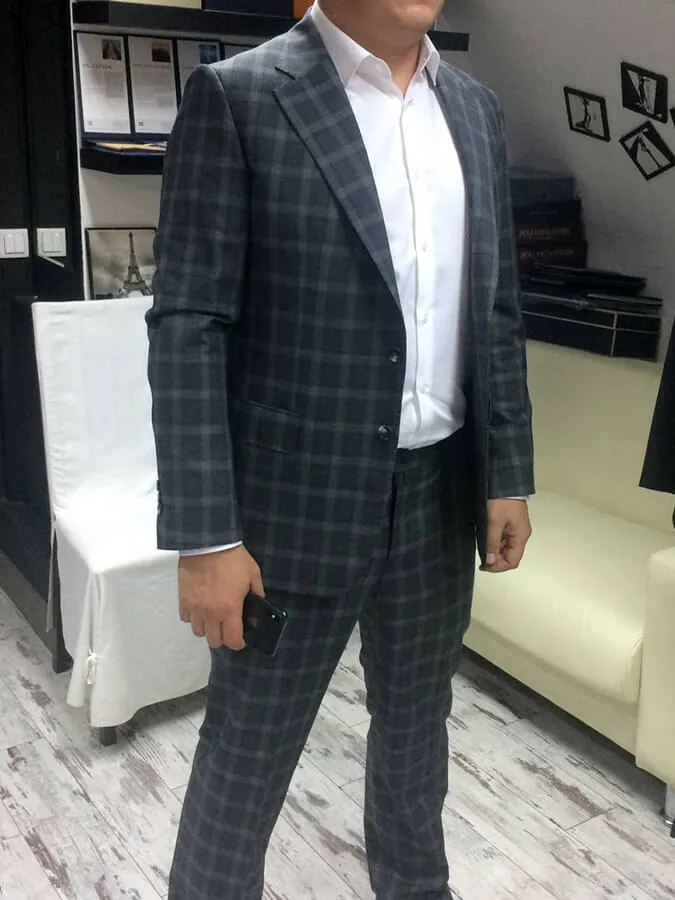
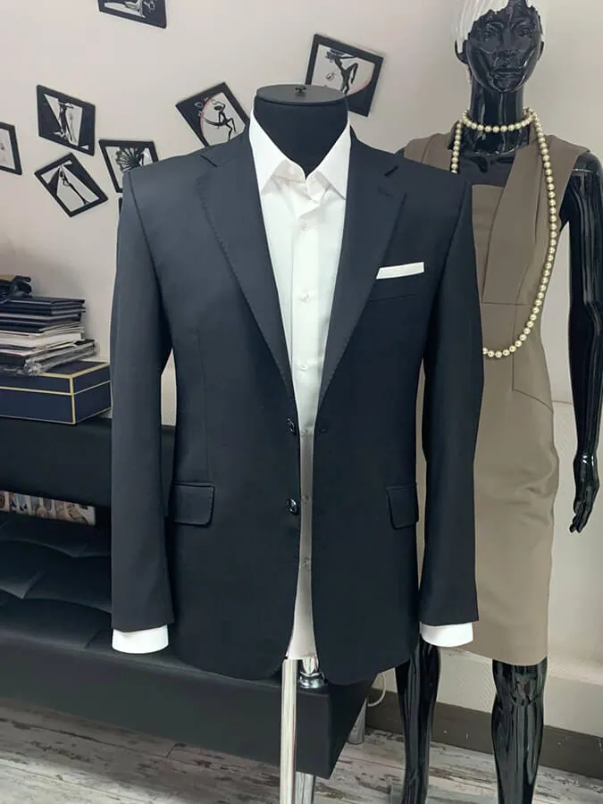

Индивидуальный пошив
Костюм на свадьбу
Для жениха, шафера или гостя. Отправной точкой может стать палитра праздника, платье невесты или любимый фасон.

Крой и посадка
Шьём однобортные и двубортные пиджаки, смокинги, двойки и тройки. Продумываем, как будет выглядеть комплект во время церемонии и после неё.
На первой примерке
Проверяем линию плеч и закрытие шлиц, длину брюк и рукавов. Из-под пиджака виден край манжеты сорочки примерно на 1–1,5 см.
Первая встреча — 1 час, первая примерка — 30 минут, финальная — 40 минут.


Какая ткань подойдёт
Для прохладной погоды предложим шерсть, кашемир или твид, для летней церемонии — лён или хлопок. Цвет подбираем рядом с остальными деталями образа.
Как складывается цена
На сумму влияют выбранный комплект, ткань, внутренние карманы, отделка и вышивка.
Ткани и поставщики

Фасоны и детали
Подборка кроя, фактур и отделки для разговора с портным.






Из галереи ателье





Первая встреча
Сравним образцы и снимем мерки на Тверской, 9с7. Для посещения нужна предварительная запись.